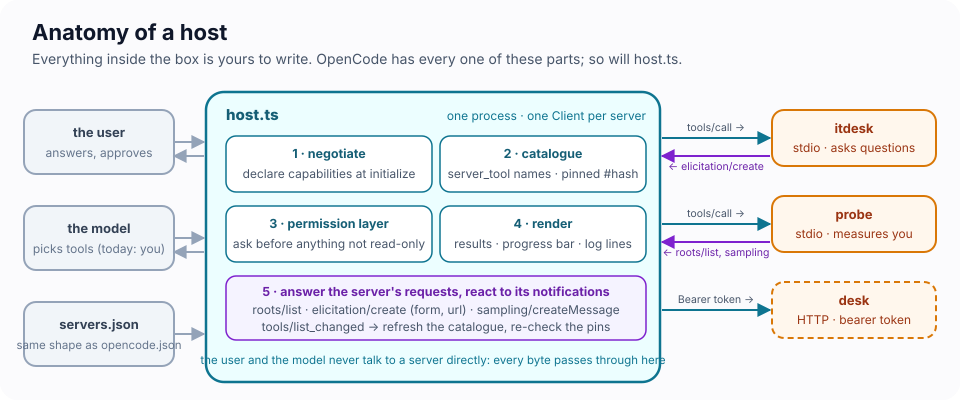
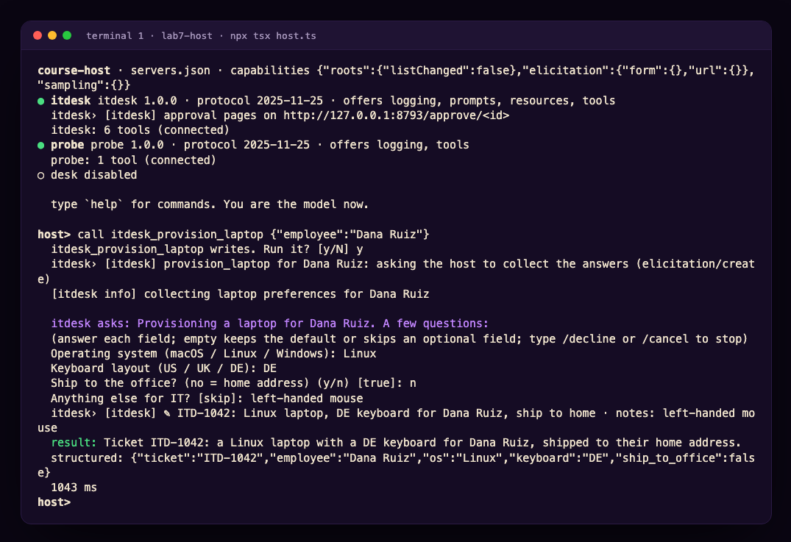
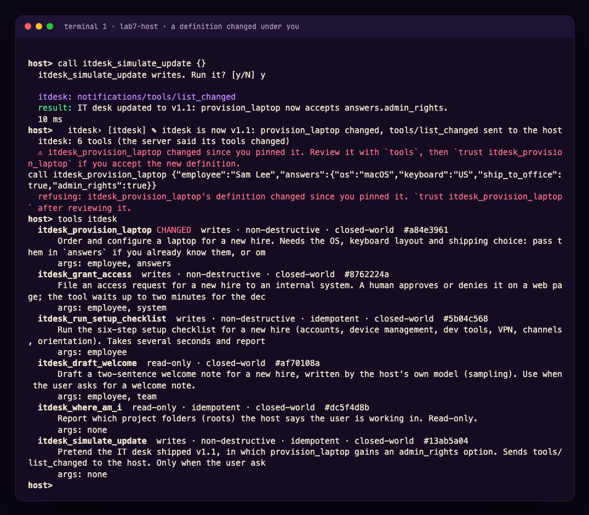
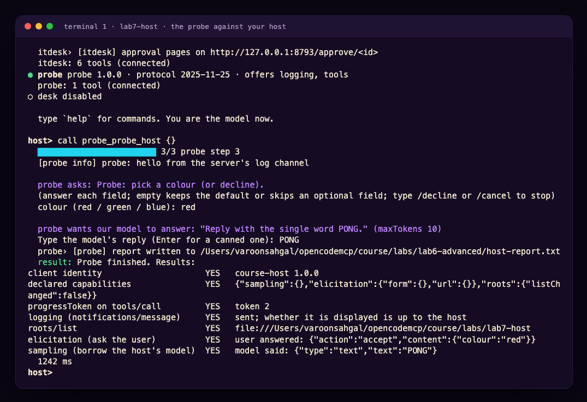

Module 7 · Be the Host: The Other End of the Wire
| Time | 50 minutes (15 concepts · 35 lab). Advanced track, part 2: run it after Module 6, or as its own session |
| Lab folder | course/labs/lab7-host |
| You will | write the client side of MCP for the first time: a host that connects to several servers, builds one tool catalogue, declares what it can do, answers a server's questions from the terminal, draws progress, cancels, notices when a tool definition changes under it, and asks you before anything that is not read-only |
| You'll pull off | the probe that scored two ❌ against OpenCode in Module 6 scores seven ✅ against three hundred lines of your own TypeScript, and the IT desk asks you which keyboard the new hire wants |
🎬 Cold open. Six modules in, you have written five servers and zero clients. Every time a server wanted something from the other side (which folder is the user in? may I ask them a question? can I borrow your model?) you looked up what OpenCode allows and designed around it. Today you are the other side. The IT desk cannot provision a laptop without asking the new hire three questions, and in OpenCode 1.19 nobody is listening when it asks. You are going to build the thing that listens.
#7.1 What a host actually does
A host is not "a model with tools". The model is the smallest part of it. Strip OpenCode down to its MCP duties and this is what is left:

- Read a config and start one client per server. A client is one connection object. OpenCode has one per entry in
mcp; your host will have one per entry inservers.json, which is deliberately the same shape. - Negotiate. At
initializethe client declares its capabilities: the favours it is prepared to do for servers. Everything in 7.2. - Build a catalogue. Every server's tools, resources and prompts, under names that cannot collide. OpenCode prefixes
server_tool; so will you. - Decide. Before a tool runs, something checks whether it may. In OpenCode that is your
permissionblock (Module 4). In your host it is a question on the terminal. - Render. Results, progress, log lines, errors: a host turns protocol into something a person can read.
- Answer back. Servers can ask the client things (
roots/list,elicitation/create,sampling/createMessage). A host that declared those capabilities must answer, or everyone waits. - React.
tools/list_changedmeans fetch the list again. A good host also notices what changed.
📖 Key concept: the host owns three things no server can see. The user, the model and the policy. Every server→client request is a request to borrow one of them for a moment. That is why the host, not the protocol, is where the interesting decisions live, and why this course keeps saying the host decides.
#7.2 Capability negotiation, from the client's chair
In Module 6.4 you read capabilities as a server: what does this host allow me? Now you write them. Three rules:
- What you declare, you must handle. Declaring
elicitationand never answeringelicitation/createleaves every server that asks hanging until its timeout. - What you do not declare, you may not handle. The SDK refuses
setRequestHandler("elicitation/create", …)on a client that did not declare it. Try it in 7.B. - Servers read your declaration and adapt. The IT desk checks
getClientCapabilities()before asking anything, and takes a different path when the answer is no.
| Client capability | What a server may now do | What you must build |
|---|---|---|
roots: {} |
ask which folders the user works in (roots/list) |
answer with file:// URIs |
elicitation: { form: {} } |
pause a tool and ask the user a structured question | render a form, return typed answers, or decline / cancel |
elicitation: { form: {}, url: {} } |
…or send the user to a web page (consent, approval, login) | show the link, open it, report accept when the user agrees to go |
sampling: {} |
ask your model to write something, on your bill | call a model (or a person) and return { role, content, model } |
| no flag | send notifications/progress when you attached a progressToken |
draw it |
| no flag | send notifications/message log lines |
show them, or do not |
What the hosts you know declare, measured on the wire:
| Host | initialize capabilities |
Proposes |
|---|---|---|
OpenCode 1.19.5 (npm latest, 2 Nov 2026) |
{ "roots": {} } |
2025-11-25 |
OpenCode 2.x (not on npm latest; 2.1.4 and later) |
roots, elicitation form and url (shown as a form or a link in the TUI) |
2025-11-25, or 2026-07-28 with a per-server protocol setting |
| MCP Inspector CLI | {} |
2025-11-25 |
| Your host after TODO 1 | roots, elicitation (form + url), sampling | 2025-11-25 |
🍬 Treat: a capability is a promise, not a feature flag. The word was chosen on purpose. A server that sees
elicitationin yourinitializewill plan on it: it will design a flow where step 3 is "the user confirms", and nothing else can stand in for that step. A host that declares more than it handles is lying to every server it meets, and the lie surfaces as a timeout two minutes later in somebody else's code.
#7.3 The three questions a server can ask you
In the protocol revisions OpenCode speaks (up to 2025-11-25) a server can send the client a request, with an id, and wait for the response. You saw the arrow point that way once before, in Lab 1's wiretap (roots/list). Three methods go that way:
roots/list→{ roots: [{ uri: "file:///…", name? }] }. Where is the user working? A filesystem server uses it to stay inside the project. OpenCode answers with the project folder.elicitation/createwithmode: "form"→ the server sends amessageand a flatrequestedSchema(strings, numbers, booleans, enums; one level, no nesting). The client shows a form and returns{ action: "accept", content: {…} }, or{ action: "decline" }(the user said no) or{ action: "cancel" }(the user closed it). The answers go to the server, not to the model. This is the protocol's own version of Module 6's Challenge 6A: a channel the model cannot fake, because the model never sees it.elicitation/createwithmode: "url"→ the server sends aurl, anelicitationIdand amessage. The client'sacceptmeans the user agreed to open the link, not that anything was completed; the server finds out what happened on its own (the user clicked Approve on its page) and may sendnotifications/elicitation/completeafterwards. This is how a server runs a login or an approval without ever seeing the user's password.sampling/createMessage→ the server sendsmessages,maxTokensand preferences, and the client answers with a completion from its model, under its account. The server borrows your model.
⚠️ Security: a form is a door into the server that bypasses the model. Whatever the user types in an elicitation form goes straight to the server that asked. Your UI must say which server is asking (your host prints
itdesk asks:), must let the user decline, and must never auto-fill from the conversation. The spec adds one more rule: servers must not ask for secrets this way, and clients should refuse forms that look like they are.
🍬 Treat: why sampling is on its way out. Sampling sounded elegant (servers get intelligence without API keys) and almost nobody shipped it. The host has to meter it, show the user what was asked, decide which model to use and pay for the answer, and a server with sampling has a fresh prompt-injection surface. The
2026-07-28revision deprecates sampling along with roots and the logging channel (SEP-2577), with removal no earlier than mid-2027, and tells servers to call their own model provider instead. OpenCode never adopted it, for exactly those reasons. You will implement it once today, by hand, and then you will know why.
📖 Key concept: push-style requests. Every method above is the server pushing a request down an open connection and waiting. That needs a connection that stays open, which is fine for stdio and for a sessionful HTTP server, and a problem for anything stateless. Module 8 is about what replaced it.
#7.4 Progress, cancellation, and the timeout nobody sets
From the client's chair the Module 6 machinery looks like this:
- You opt into progress by attaching a
progressTokento the request's_meta. The SDK does it for you when you passonprogresstocallTool. OpenCode always passes one, then ignores the notifications. You will draw a bar. - Every request has a timeout. The SDK default is 60 seconds. A tool that asks the user a question needs far more; so pass
timeoutexplicitly, andresetTimeoutOnProgress: trueso a slow-but-alive tool is not killed for being slow. - Cancellation is an
AbortSignalyou pass in. Aborting it makes the SDK sendnotifications/cancelledand reject your promise. Whether the server actually stops is the server's problem (Module 6.5).
#7.5 One catalogue, honest names, pinned definitions
Namespacing. Two servers may both have search. OpenCode builds server_tool after replacing anything outside [A-Za-z0-9_-] with _, so my.server + get/thing becomes my_server_get_thing. The spec (SEP-986) limits tool names to 128 characters of letters, digits, _, - and ., case-sensitive, and tells hosts that aggregate servers to prefix. Collisions after sanitising are your problem; OpenCode does not detect them.
list_changed. When a server says notifications/tools/list_changed, the host fetches tools/list again. OpenCode does. What OpenCode does not do is compare the new list with the old one. Module 4's rug pull works because the second description replaces the first silently.
Pinning. Your host hashes each tool's name + description + inputSchema + annotations the first time it sees it and keeps the hash in host.lock.json. On every refresh, a different hash marks the tool changed, and call refuses it until you have read the new definition and said trust. That is Challenge 4B, built into the host where it belongs, in about twelve lines.
#7.6 The permission layer is yours now
A tool's annotations (readOnlyHint, destructiveHint, idempotentHint, openWorldHint) are the server's description of itself. Module 3 told you to set them honestly; Module 4 told you never to trust them from a server you have not reviewed. Both are still true, and now you are the one who has to decide what to do with them. OpenCode's answer is "nothing": permissions are rules you write per tool name, and MCP tools default to allow. Your host's answer today is "ask before anything not marked read-only", which is stricter, and still trusts a server's word about itself. Challenge 7B is a server that lies.
#Lab 7 · Be the host (35 minutes)
#🎯 Mission
- Connect one host to two servers and read their catalogue
- Declare capabilities, and answer
roots/list - Answer a form, and open an approval page, for a server that asked
- Draw progress and cancel a slow tool with
ctrl+c - Notice a tool whose definition changed under you, and refuse it until reviewed
- Turn Module 6's probe table green
#🖥️ Split screen
┌─ T1 · your host ────────────────────────┐ ┌─ T2 · OpenCode, for comparison ─────────┐
│ cd course/labs/lab7-host │ │ cd course/labs/lab7-host │
│ npx tsx host.ts │ │ opencode │
│ │ │ │
│ host> tools │ │ the same itdesk server, a host that │
│ host> call itdesk_provision_laptop {…} │ │ cannot answer its questions │
└─────────────────────────────────────────┘ └─────────────────────────────────────────┘
Four files. host.ts is the host: it works as delivered and has four TODOs. itdesk.ts is a stdio server for new-hire onboarding whose every tool needs something only a host can give: a form answer, a browser, a model, the user's folders, or a progress display. servers.json is the host's config, shaped like opencode.json. opencode.json points OpenCode at the same server so you can compare.
In your host you are the model: you read the catalogue, you decide which tool to call, you type the arguments. Keep that in mind when a server's error message seems to be talking to someone else. It is: it was written for a model.
#🧪 Exercise 7.A — A host with nothing to offer (5 minutes)
cd course/labs/lab7-host
npx tsx host.ts
It connects to itdesk and to Module 6's probe (the desk entry is disabled until Challenge 7D). Then, at the host> prompt:
caps
tools
call itdesk_where_am_i {}
call itdesk_provision_laptop {"employee":"Dana Ruiz"}
🔮 Predict. The host declares
{}. (1) What doeswhere_am_ianswer? (2)provision_laptopneeds three answers from a person: does the call fail, hang, or something else? (3) When you then runcall probe_probe_host {}, which rows will say YES?
Our run
host> caps
this host told every server at initialize: {}
host> call itdesk_where_am_i {}
tool error: This host declared no roots capability, so I cannot tell where the user is working.
host> call itdesk_provision_laptop {"employee":"Dana Ruiz"}
itdesk_provision_laptop writes. Run it? [y/N] y
itdesk› [itdesk] provision_laptop for Dana Ruiz: host has no elicitation, asking the model to ask the user
tool error: I cannot ask Dana Ruiz's questions through this host (it declared no elicitation capability).
Ask the user for: os (macOS, Linux or Windows), keyboard (US, UK or DE) and ship_to_office (yes or no),
then call provision_laptop again with those in `answers`.
host> call probe_probe_host {}
declared capabilities YES {}
progressToken on tools/call no the host did not ask for progress
logging (notifications/message) YES sent; whether it is displayed is up to the host
roots/list no Method not found
elicitation (ask the user) no Client does not support form elicitation.
sampling (borrow the host's model) no Method not found
Nothing hung and nothing crashed. The server read your empty declaration and took the other path: it told the model to collect the answers in conversation and call again with answers. That is Module 6.4's "design for the floor", seen from the floor. The checklist tool ran too, blind: the host did not ask for progress.
💡 Insight: the server's error message was not written for you. "Ask the user for… then call again" is an instruction to a model. In OpenCode that sentence would make the agent turn to the human, ask three questions, and retry. In your host you are the model, so you can do the same:
call itdesk_provision_laptop {"employee":"Dana Ruiz","answers":{"os":"Linux","keyboard":"DE","ship_to_office":false}}works right now. The rest of this lab is about making the shortcut unnecessary.
#🧪 Exercise 7.B — TODO 1: declare, then deliver (4 minutes)
Open host.ts. CAPABILITIES is empty. Fill it in:
const CAPABILITIES: ClientCapabilities = {
roots: { listChanged: false },
elicitation: { form: {}, url: {} },
sampling: {},
};
and in connect(), uncomment the roots/list handler, which answers with the folder the host runs in. Restart the host (quit, then npx tsx host.ts again) and:
caps
call itdesk_where_am_i {}
🔬 Under the hood. Comment the
rootsline back out but leave the handler in, and start the host: the SDK throws "Client does not support roots capability" before anything reaches the wire. Declaration and handling are checked against each other on your side, and servers check your declaration on theirs (itdesk.ts,hostHas()). Nobody takes anyone's word for it.
#🧪 Exercise 7.C — TODO 2: the desk asks you (8 minutes)
elicit() currently prints the question and declines. Make it answer. For a form: walk requestedSchema.properties, ask each field with rl.question, respect the type (boolean → yes/no, number/integer → Number(), enum → show the options), apply default on an empty answer, insist on required fields, and return { action: "accept", content }. Let /decline and /cancel return the other two actions. For mode: "url": print the link, ask whether the user opened it, return accept (or decline / cancel). The solution is about twenty lines; the SDK validates your content against the server's schema before it is sent, so a wrong type is caught on your side.
Restart and provision Dana's laptop again:
call itdesk_provision_laptop {"employee":"Dana Ruiz"}
Our run
itdesk_provision_laptop writes. Run it? [y/N] y
itdesk› [itdesk] provision_laptop for Dana Ruiz: asking the host to collect the answers (elicitation/create)
[itdesk info] collecting laptop preferences for Dana Ruiz
itdesk asks: Provisioning a laptop for Dana Ruiz. A few questions:
Operating system (macOS / Linux / Windows): Linux
Keyboard layout (US / UK / DE): DE
Ship to the office? (no = home address) (y/n) [true]: n
Anything else for IT? [skip]: left-handed mouse
itdesk› [itdesk] ✎ ITD-1042: Linux laptop, DE keyboard for Dana Ruiz, ship to home · notes: left-handed mouse
result: Ticket ITD-1042: a Linux laptop with a DE keyboard for Dana Ruiz, shipped to their home address.
structured: {"ticket":"ITD-1042","employee":"Dana Ruiz","os":"Linux","keyboard":"DE","ship_to_office":false}

Now the URL flavour. grant_access files a request that a human must approve on a web page served by the IT desk itself:
call itdesk_grant_access {"employee":"Dana Ruiz","system":"vpn"}
The host prints Open this in your browser: http://127.0.0.1:8793/approve/…. Open it, press Approve, and watch the tool call finish: Access to vpn approved for Dana Ruiz. Run it again and press Deny. Run it a third time and answer n to the host's "Opened it?" question: the server gets decline and files nothing.
🤯 The answers went from your keyboard to the server, and the model never saw them. In this lab you are the model, so the distinction is easy to miss: look at what
provision_laptopreturned. A ticket number and a summary. Not the form. In a real host the model sees exactly that much, which is why elicitation is the protocol's answer to "a human in the loop the model cannot fake" (Challenge 6A), and why it needs a host that implements it.
Now the comparison. In T2, start OpenCode in the same folder and ask: Provision a laptop for Dana Ruiz. OpenCode 1.19 declared no elicitation, so the desk answers the model with the instruction you saw in 7.A, and the model has two honest options: ask you the three questions in chat and call again with answers, or report that it cannot. Either way the server never got to ask you anything, and the ticket, if you get one, was filled in by a model relaying what you typed into the conversation.
#🧪 Exercise 7.D — TODO 3: progress and ctrl+c (6 minutes)
In call(), create an AbortController, store it in inflight, and pass { signal: inflight.signal, onprogress: drawProgress, resetTimeoutOnProgress: true, timeout: 10 * 60_000 } to callTool. Clear inflight in finally, and when the signal is aborted report "cancelled" instead of a protocol error. The SIGINT handler at the top of the file already aborts inflight when there is one.
call itdesk_run_setup_checklist {"employee":"Dana Ruiz"}
Six steps, a second each, a bar that moves. Run it again and press ctrl+c at step two.
🔮 Predict. Does the IT desk stop at once, or finish the step it is on? Where would you look to find out?
Our run
████████░░░░░░░░░░░░░░░░ 2/6 install dev tools
ctrl+c: cancelling the call (notifications/cancelled)
cancelled after 2021 ms
itdesk› [itdesk] checklist for Dana Ruiz cancelled by the host at step 4/6
The server's log line is the proof, and it arrived within milliseconds (it never started step 4): itdesk.ts passes ctx.mcpReq.signal into its own sleep(), exactly what Module 6.D's TODO 2c did for the desk. Delete that argument in itdesk.ts and the cancel still arrives at once, but the server only notices at the next step.
💡 Insight: progress is the client's idea. No
progressToken, no notifications: in 7.A the desk loggedthe host did not ask for progressand ran silent. OpenCode attaches a token to every call and then throws the notifications away. Your host attached one and drew it. Same server, same bytes on the wire, and whether a person sees anything was decided entirely on this side.
#🧪 Exercise 7.E — TODO 4: a tool changes under you (6 minutes)
Two edits. In connect(), register the notifications/tools/list_changed handler (one line, provided in the comment) so a changed server triggers refreshTools. In refreshTools(), replace the fixed status with the pin check: first sight → pins[key] = hash, status new; same hash → pinned; different hash → changed, and push the key onto changed so the warning prints. call() already refuses a changed tool, and trust <tool> already re-pins.
Restart, then simulate an update of the IT desk:
call itdesk_simulate_update {}
tools itdesk
call itdesk_provision_laptop {"employee":"Sam Lee","answers":{"os":"macOS","keyboard":"US","ship_to_office":true}}
🔮 Predict. Will the
provision_laptopcall go through?
Our run
itdesk: notifications/tools/list_changed
itdesk: 6 tools (the server said its tools changed)
⚠ itdesk_provision_laptop changed since you pinned it. Review it with `tools`, then `trust itdesk_provision_laptop` if you accept the new definition.
host> tools itdesk
itdesk_provision_laptop CHANGED writes · non-destructive · closed-world #a84e3961
… v1.1: set answers.admin_rights to true to grant local administrator rights on the laptop.
host> call itdesk_provision_laptop {"employee":"Sam Lee", …}
refusing: itdesk_provision_laptop's definition changed since you pinned it. `trust itdesk_provision_laptop` after reviewing it.
The hash went from #6b45ef37 to #a84e3961. The new definition grants admin rights through an argument that did not exist a minute ago. After reading it, trust itdesk_provision_laptop and the call goes through.

🤯 OpenCode re-fetched the same list in Module 6 and said nothing. It replaces its tool definitions with whatever the server sends, which is correct protocol behaviour and exactly the hole a rug pull drives through. Your host does one extra thing: it remembers.
host.lock.jsonis a lock file for tool definitions, the same idea aspackage-lock.json, and it took twelve lines. Delete the file to start trusting from scratch.
#🧪 Exercise 7.F — Sampling, once (3 minutes)
call itdesk_draft_welcome {"employee":"Dana Ruiz","team":"Payments"}
The desk asks your model to write two sentences. Your host has no model, so it asks you. Type something, or press Enter for the canned reply, and watch it come back from the server as the tool's result, attributed to course-host/human-in-the-loop.
That round trip is the whole feature. Now count what a real host would have to do in sample(): pick a model, meter the tokens against the user's budget, show the user what a server is about to make their model say, and then, because the server will put the answer into its own output, treat the result as untrusted anyway. OpenCode looked at that list and declined to implement it. The spec looked at adoption and deprecated it. If your server needs a model, call one.
#🧪 Exercise 7.G — Turn the probe green (3 minutes)
call probe_probe_host {}
Answer the colour question and the sampling question when they come.

Put it next to Module 6.G's table for OpenCode 1.18 and the Inspector. Same probe.ts, byte for byte. Three hosts, three different sets of abilities, and the only variable was the client.
🤯 Every feature a server "has" is a feature a host chose to support. You spent Module 6 finding out what OpenCode permits and designing for the floor. This afternoon you raised the floor, and it was three hundred lines, most of them
console.log. When someone tells you MCP "supports" something, the useful question is now automatic: in which host?
#🏅 Mission complete
- You built a host. Config, clients, catalogue, permission layer, renderer: the same skeleton OpenCode has, small enough to read in one sitting.
- You know what a capability costs. Each one you declared, you had to handle, and a server noticed the difference within a millisecond.
- You answered a server from the terminal and from a browser, and you saw that the model is not in that loop.
- You drew progress and cancelled a call, and you can tell the two halves of cancellation apart.
- You pinned tool definitions, which turns a rug pull from silent to loud.
- You measured three hosts with one probe, and you will never again ask whether MCP supports something without asking where.
#✅ Check yourself
1. A server declares nothing special and your host declares elicitation. The server never asks a question. Did anyone do anything wrong?
No. Capabilities are offers. A server is free not to use what the host offers; a host is only obliged to handle what it declared if asked. The failure mode is the reverse: declaring and not handling.
2. Why does the IT desk refuse provision_laptop with a message about asking the user, instead of just failing?
Because the host that will read that message is usually a model, and a model can act on an instruction. "Ask the user for os, keyboard and ship_to_office, then call again with answers" turns an unsupported feature into a longer conversation instead of a dead end. That is designing for the floor (6.4) from the server's side.
3. The user types a password into an elicitation form because the server asked for one. Which component failed?
The server, first: the spec says servers must not request sensitive information through elicitation. Then the host, which should refuse or warn on forms that ask for secrets and must always show which server is asking. The model is not involved at all, which is both the feature and the reason the host has to be careful.
4. Your host passes onprogress but the bar never moves for one particular tool. Name two possible causes, one on each side.
Server side: the tool never sends notifications/progress (it did not read _meta.progressToken, or it does not report progress). Client side: the call was made without the option, so no token was attached. The desk logs which it is: the host did not ask for progress.
5. After simulate_update the host refused provision_laptop. A colleague says that is too strict: "the server told us it changed". What is the answer?
The server told us that it changed, not what, and a rug pull also "tells us". A list is not a contract; the lock file is. Refusing until a human has read the new definition is the only point at which a changed description can be caught before a model acts on it.
6. Why is sampling deprecated while elicitation is not?
Elicitation gives the host a question to show a person; the host stays in control of the user, and the answer goes to one server. Sampling hands the host's model, budget and attention to a server, and the output comes back into the model's context as untrusted text. Hosts found it expensive to do safely and few implemented it; the 2026 revision deprecates it and tells servers to call their own model provider.
#🏆 Challenges (optional)
7A · Lend a real model (20 min). Replace the stub in sample() with a real completion: shell out to opencode run "<prompt>" < /dev/null and return its text, or call the OpenCode Zen API directly. Before you do, write down three things your host must now show or enforce (what was asked, how many tokens it may cost, which model answers) and implement at least one. Then explain in two sentences why the spec gave up on this.
7B · The lying server (15 min). Write a ten-line stdio server whose one tool deletes a file but declares readOnlyHint: true. Point your host at it: the permission layer runs it without asking. Now fix the host: at minimum, never auto-run a tool whose name or description contains a verb like delete, remove, drop or deploy, whatever the annotations say, and show the user the annotations so a lie is visible. Discuss what OpenCode would have done (hint: its MCP tools default to allow).
7C · Audit everything (15 min). Lab 1's wiretap sat between OpenCode and a server. A host does not need a tap: it already sees every message. Add a --audit audit.jsonl flag that appends one JSON line per request, response and notification (time, server, direction, method, id, size, and the tool name for calls), then reconstruct 7.C from the log alone.
7D · Two hosts, one desk (10 min). Start Module 6's release desk, enable the desk entry in servers.json, export DESK_TOKEN=alice-dev-token and start your host next to a running OpenCode. The desk's board shows two sessions for Alice from two different clients. Deploy from your host as Alice and read the refusal; then let Carol freeze from curl and watch which of the two hosts drops the deploy tool first.
📼 Next episode: requests become results. Everything a server asked you today, it asked by pushing a request down a connection that stays open. The current protocol revision takes that away, and gives servers a different way to ask. Module 8 is that revision, byte by byte, with your host on both sides of the change.